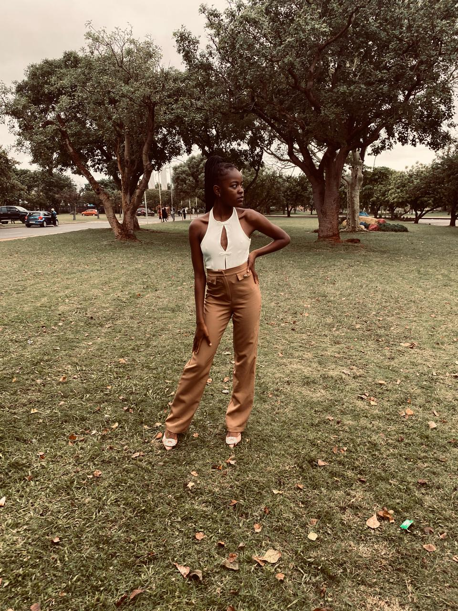
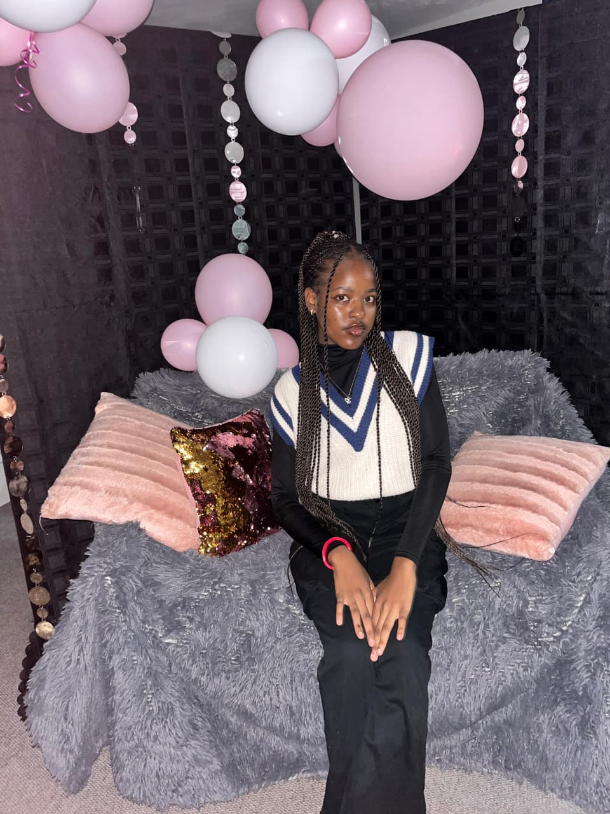
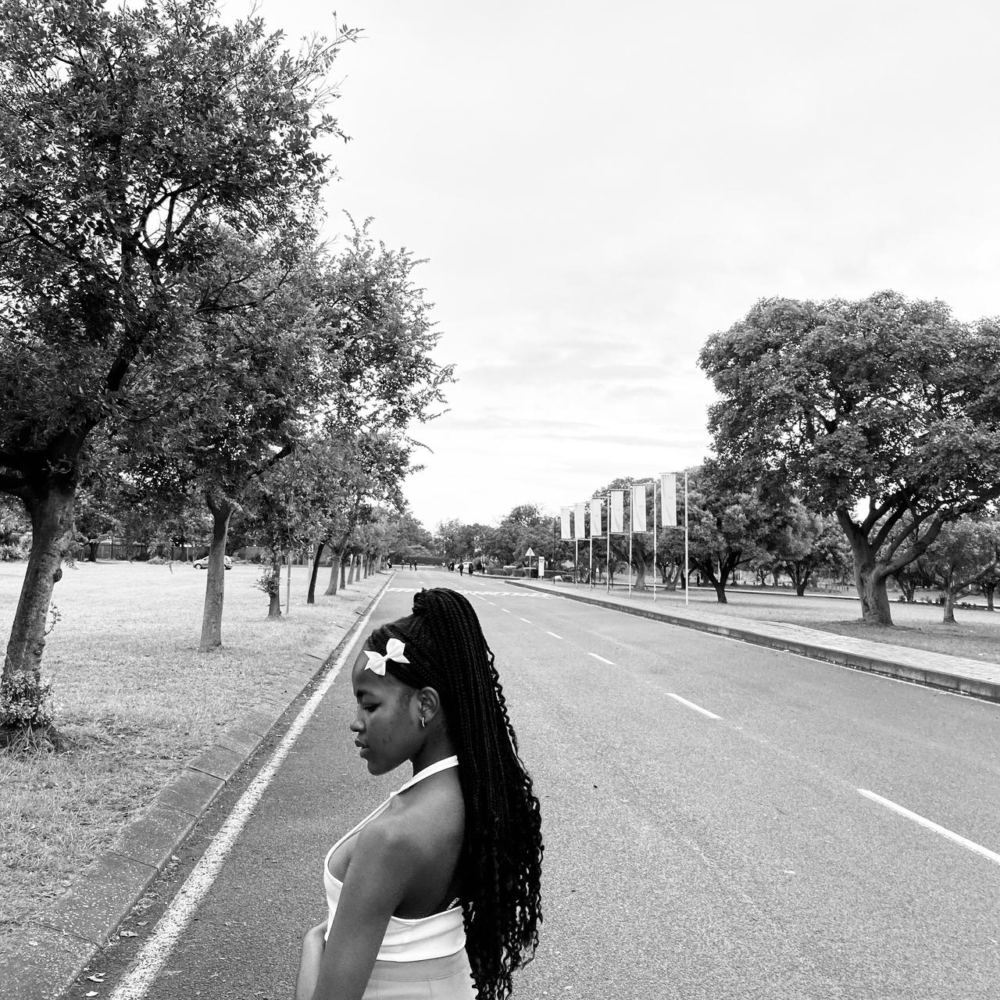
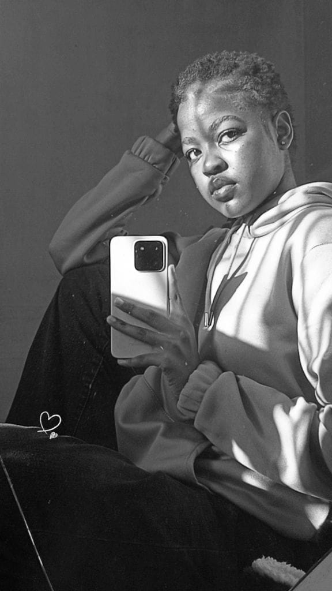

Model, Creator, Brand Ambassador
Chioma
Fashion, beauty, and lifestyle work with an editorial eye. Currently modeling and creating content as brand ambassador for Azhyre Tech, Azhyre Fashion, and SerenQ.

Fashion
Beauty
Lifestyle

Fashion
Beauty
Lifestyle
What I Offer
Modeling
Editorial, campaign, and lookbook work across fashion, beauty, and lifestyle.
Content Creation
Photo and social content shaped around a brand's own voice and platforms.
Brand Partnerships
Ongoing ambassador roles, from campaign appearances to social presence.
Let's create something with intention.
For bookings, collaborations, and brand partnerships, reach out. I'd love to hear the vision.
Work With Me